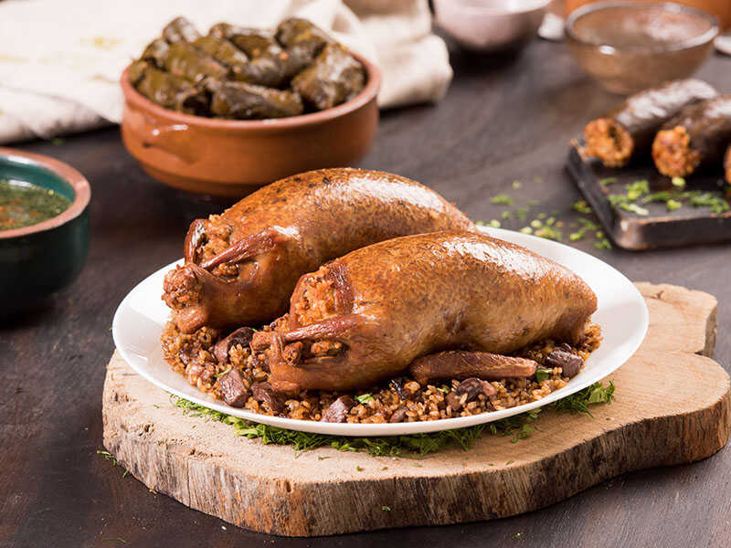

Egyptian Hamam-Mahshi

Description
Egyptian Hamam-Mahshi recipe info
| Prep Time |
Cook Time |
Total Time |
Servings |
Yield |
| 45 mins |
45 mins |
1.5 hr |
6 |
6 servings |
| Let's start |
Ingredients
- Pigeons (4-6)
- Short-grain rice
- Butter or vegetable oil
- Onions, finely chopped
- Garlic cloves, minced
- Ground cinnamon
- Ground allspice
- Ground black pepper
- Salt
- Chicken broth or water
- Lemon juice
Steps
- Clean the pigeons thoroughly, removing feathers and entrails.
- Wash and drain the rice.
- In a skillet, heat butter or vegetable oil and sauté the chopped onions until golden.
- Add minced garlic, ground cinnamon, ground allspice, ground black pepper, and salt to taste. Sauté for a few more minutes.
- Add the washed rice to the skillet and stir well to coat it with the onion and spice mixture.
- Stuff each pigeon with the rice mixture, leaving some space for the rice to expand during cooking.
- Secure the openings of the pigeons with toothpicks or kitchen twine.
- In a large pot, place the stuffed pigeons side by side.
- Add enough chicken broth or water to cover the pigeons.
- Bring the pot to a boil, then reduce the heat to low and simmer for about 1 hour or until the pigeons and rice are fully cooked.
- Remove the cooked pigeons from the pot and place them on a serving dish.
- Drizzle the pigeons with lemon juice.
- Serve hot with rice or bread, and enjoy!